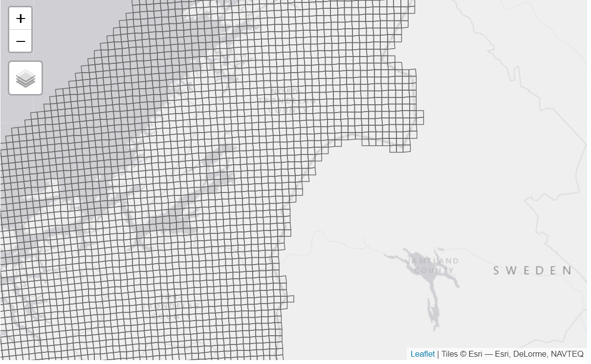

20 Master grid
Author:
Anders L. Kolstad
March 2023
20.1 Introduction
This chapter describes the making of a master raster grid for all of mainland Norway. This grid is used to align all ecosystem and indicator maps so that it becomes possible to do easy resamping, masking and aggregating.
To do : I plan to add examples how to use this master grid on real data.
20.2 About the underlying data
I will use the statistical grid from Norway (5x5km) and resample this to a higher resolution of 50 x 50 meters.
20.3 Analyses
# Set up conditional file paths
dir <- substr(getwd(), 1,2)
pData <- ifelse(dir == "C:",
"P:/41201785_okologisk_tilstand_2022_2023/data/",
"/data/P-Prosjekter2/41201785_okologisk_tilstand_2022_2023/data/")Import data
#st_layers(paste0(pData, "Basisdata_0000_Norge_25833_StatistiskRutenett5km_FGDB.gdb"))
grid_5km <- sf::read_sf(paste0(pData, "Basisdata_0000_Norge_25833_StatistiskRutenett5km_FGDB.gdb"))
tmap_mode("view")
tm_shape(grid_5km$SHAPE)+
tm_borders()
Confirming CRS is EPSG25833:
st_crs(grid_5km)
#> Coordinate Reference System:
#> User input: ETRS89 / UTM zone 33N
#> wkt:
#> PROJCRS["ETRS89 / UTM zone 33N",
#> BASEGEOGCRS["ETRS89",
#> ENSEMBLE["European Terrestrial Reference System 1989 ensemble",
#> MEMBER["European Terrestrial Reference Frame 1989"],
#> MEMBER["European Terrestrial Reference Frame 1990"],
#> MEMBER["European Terrestrial Reference Frame 1991"],
#> MEMBER["European Terrestrial Reference Frame 1992"],
#> MEMBER["European Terrestrial Reference Frame 1993"],
#> MEMBER["European Terrestrial Reference Frame 1994"],
#> MEMBER["European Terrestrial Reference Frame 1996"],
#> MEMBER["European Terrestrial Reference Frame 1997"],
#> MEMBER["European Terrestrial Reference Frame 2000"],
#> MEMBER["European Terrestrial Reference Frame 2005"],
#> MEMBER["European Terrestrial Reference Frame 2014"],
#> ELLIPSOID["GRS 1980",6378137,298.257222101,
#> LENGTHUNIT["metre",1]],
#> ENSEMBLEACCURACY[0.1]],
#> PRIMEM["Greenwich",0,
#> ANGLEUNIT["degree",0.0174532925199433]],
#> ID["EPSG",4258]],
#> CONVERSION["UTM zone 33N",
#> METHOD["Transverse Mercator",
#> ID["EPSG",9807]],
#> PARAMETER["Latitude of natural origin",0,
#> ANGLEUNIT["degree",0.0174532925199433],
#> ID["EPSG",8801]],
#> PARAMETER["Longitude of natural origin",15,
#> ANGLEUNIT["degree",0.0174532925199433],
#> ID["EPSG",8802]],
#> PARAMETER["Scale factor at natural origin",0.9996,
#> SCALEUNIT["unity",1],
#> ID["EPSG",8805]],
#> PARAMETER["False easting",500000,
#> LENGTHUNIT["metre",1],
#> ID["EPSG",8806]],
#> PARAMETER["False northing",0,
#> LENGTHUNIT["metre",1],
#> ID["EPSG",8807]]],
#> CS[Cartesian,2],
#> AXIS["(E)",east,
#> ORDER[1],
#> LENGTHUNIT["metre",1]],
#> AXIS["(N)",north,
#> ORDER[2],
#> LENGTHUNIT["metre",1]],
#> USAGE[
#> SCOPE["Engineering survey, topographic mapping."],
#> AREA["Europe between 12°E and 18°E: Austria; Denmark - offshore and offshore; Germany - onshore and offshore; Norway including Svalbard - onshore and offshore."],
#> BBOX[46.4,12,84.42,18]],
#> ID["EPSG",25833]]20.3.1 Make grid
Use the bbox and split into 50 x 50 meter cells
(masterGrid_50m <- st_as_stars(st_bbox(grid_5km), dx = 50, dy = 50))
#> stars object with 2 dimensions and 1 attribute
#> attribute(s), summary of first 1e+05 cells:
#> Min. 1st Qu. Median Mean 3rd Qu. Max.
#> values 0 0 0 0 0 0
#> dimension(s):
#> from to offset delta refsys x/y
#> x 1 24500 -1e+05 50 ETRS89 / UTM zone 33N [x]
#> y 1 30800 7965000 -50 ETRS89 / UTM zone 33N [y]This file is 6GB.
Number of cells, in millions, is:
So, quite a lot. For the area accounts we might consider using 10x10m.
20.3.2 Eksport file (final product)
stars::write_stars(masterGrid_50m, paste0(pData, "masterGrid_50m.tiff"))20.3.3 Test import
temp <- stars::read_stars(paste0(pData, "masterGrid_50m.tiff"))
st_dimensions(temp)
#> from to offset delta refsys point x/y
#> x 1 24500 -1e+05 50 ETRS89 / UTM zone 33N FALSE [x]
#> y 1 30800 7965000 -50 ETRS89 / UTM zone 33N FALSE [y]